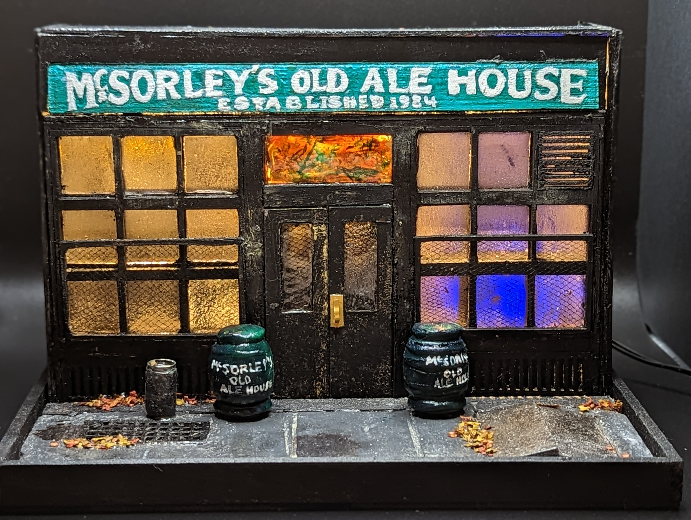
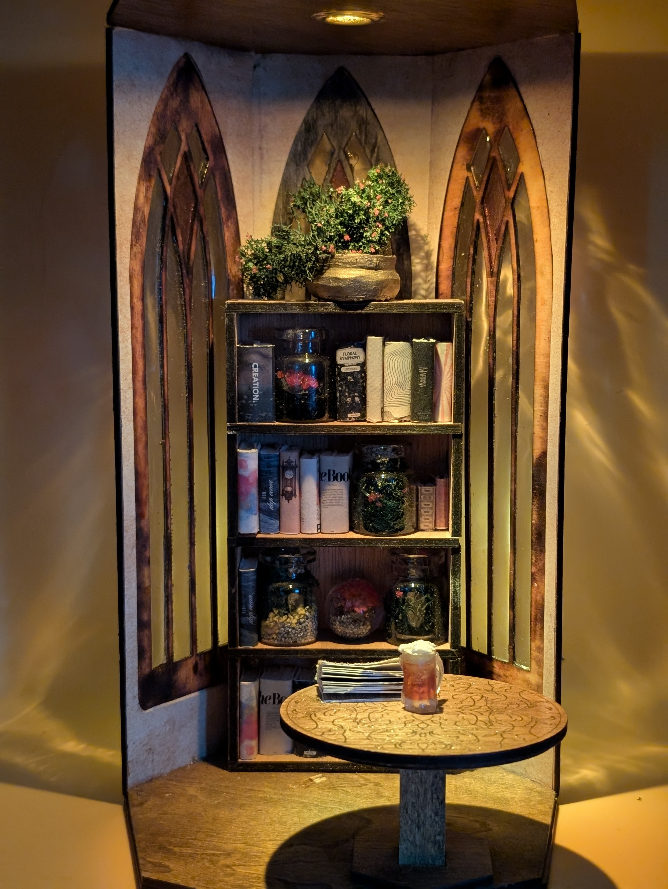
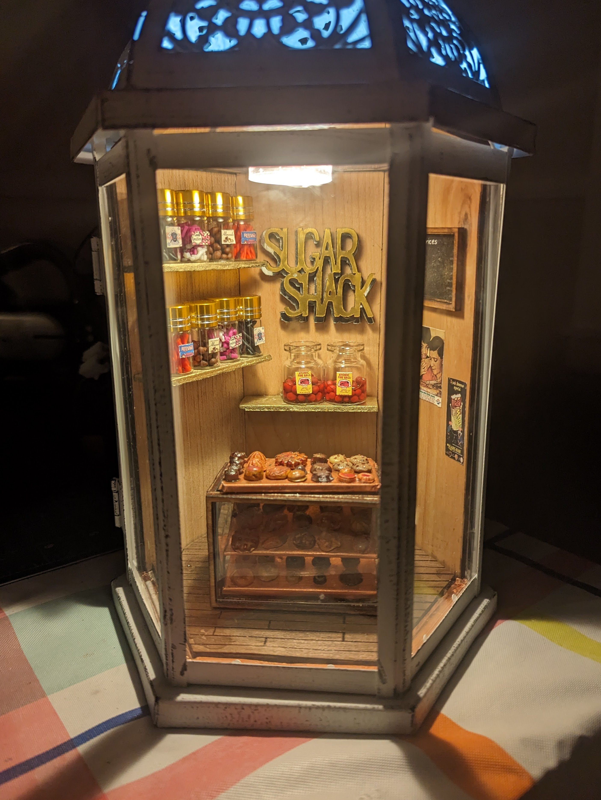
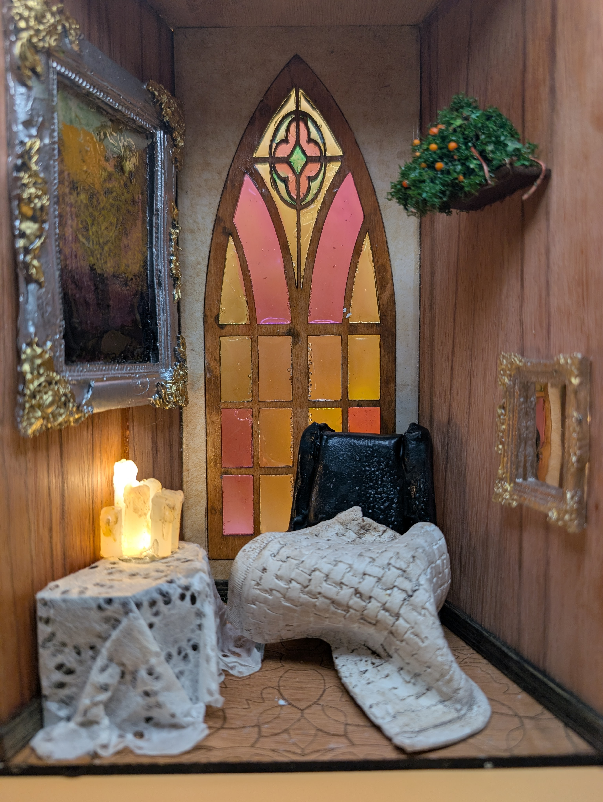
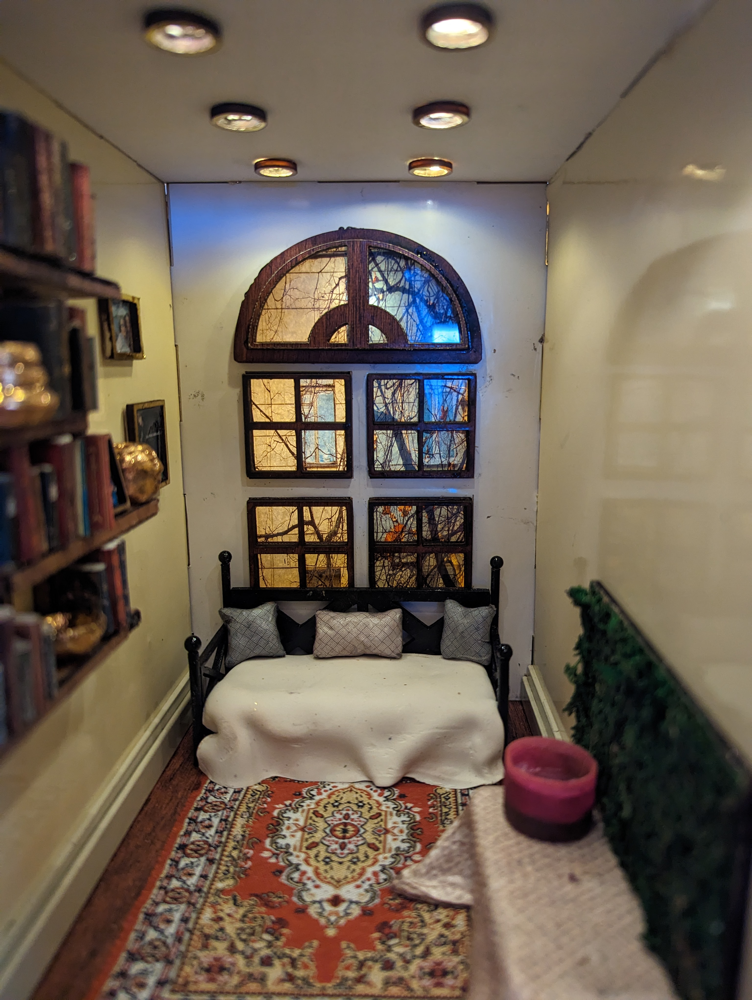
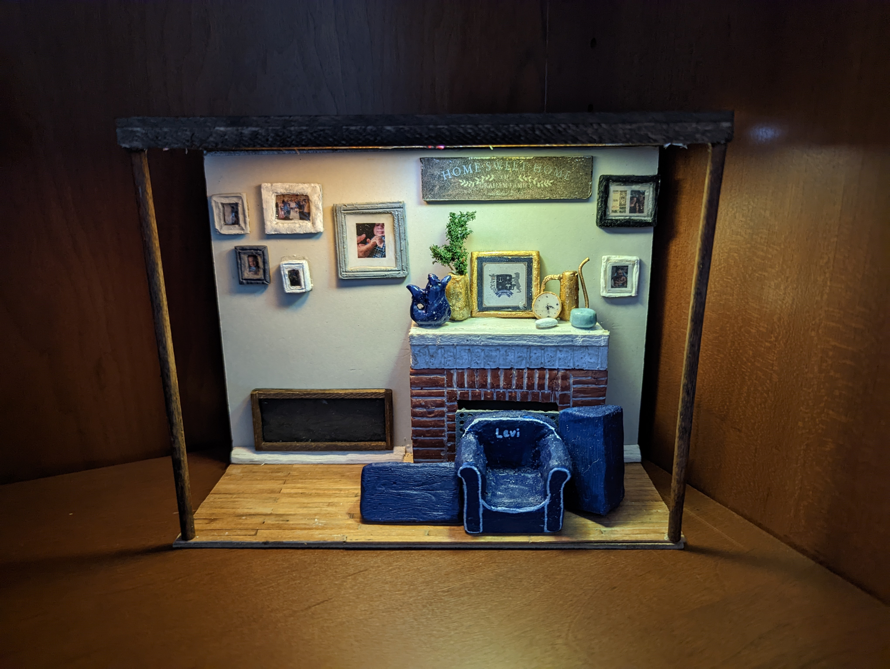
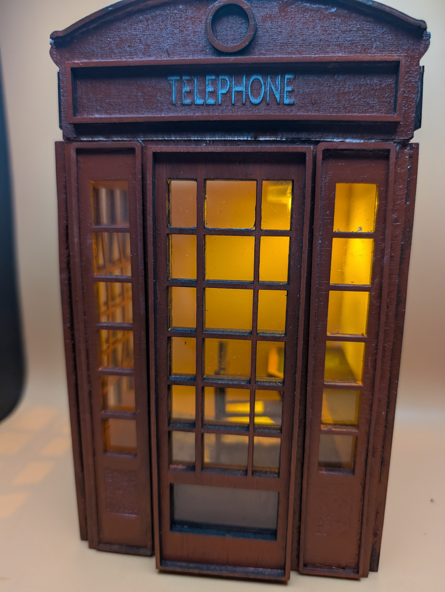

Portfolio

McSorley's Old Ale House
NYC Landmarks Series

The Amber Library
Fragments of Family Folklore

The Sugar Shack
Lantern Series

The Reading Chair
Stained Glass Series

The Reading Room
Domestic Interiors

The Apothecary
Objects and Curiosities

Home Sweet Home
Fragments of Family Folklore

Ring, If You Find This
London After Dark

The Midnight Deadline
MakeBench University Series